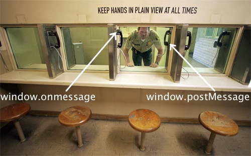
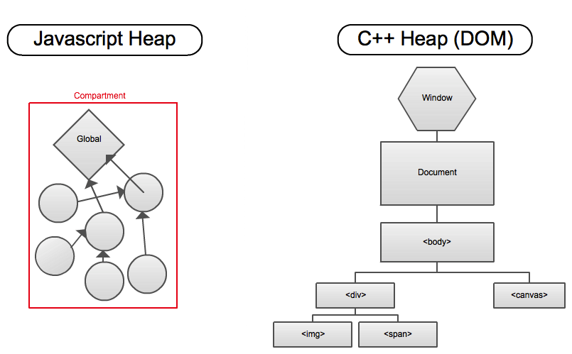
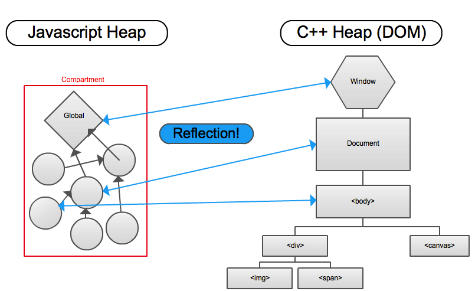
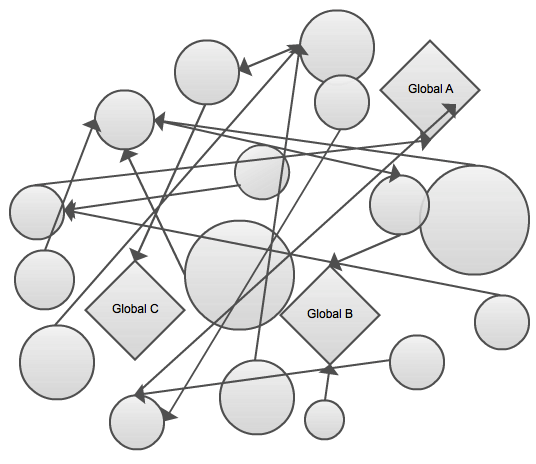
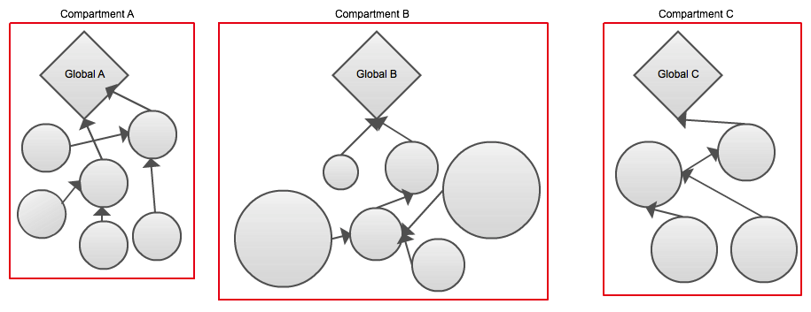
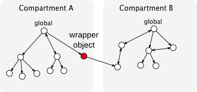
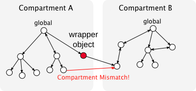
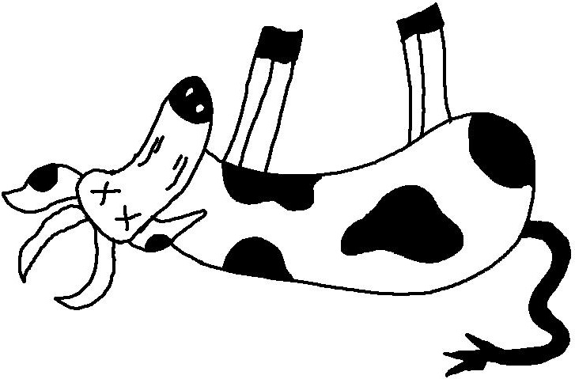
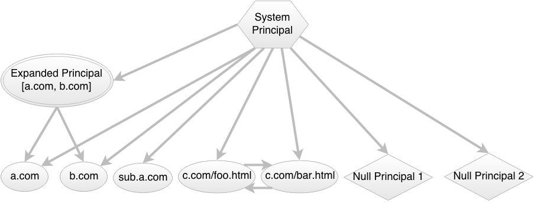
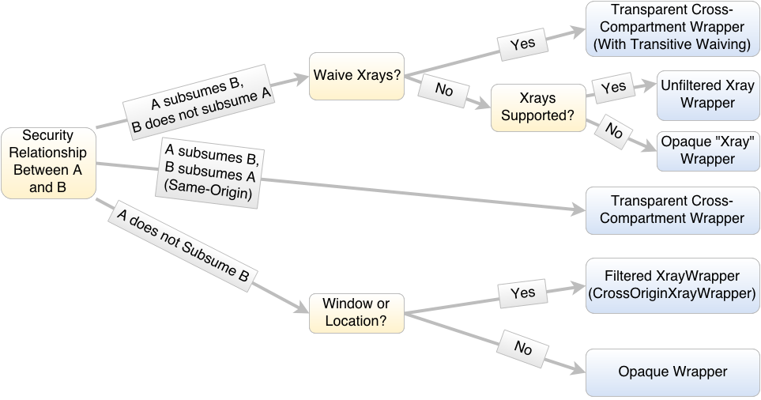

Safe by Default
Safe by Default
Gecko Script Security in a Post-Slaughterhouse World
about:talk
Who I am. First two years. Enter The Compartment @ Brussels. This is a
followup. Audience. How far we'd come. Knew there was more, the urgency
kicked in, JS-implemented Web APIs. Slaughterhouse. launched Oct 24. Heavy
churn. 1 year. Mission accomplished. Security architecture has always been
changing, but I think that will now change - basically stable (cross
fingers). Good time to get education / refresher.
Will leave time for Q and A, but feel free to raise hand at any time.
Securing Untrusted JS is Hard
People ask what I do. Prevent web pages from taking over computer. Taking over
each other. Non-technical people - huh. Defer. Technical people - shouldn't
that be a solved problem? Web around for decades. Wasn't designed with
security in mind. Security seemed superfluous - evolved organically. Lots of
APIs weren't designed or implemented carefully. Improving it faces enormous
compat/interop burdens. Slow going.
The Long Evolution of the Same Origin Policy
Cross-origin interaction mechanism particularly badly designed. dveditz: "no plan"
Wasn't well-defined or consistent. Felt dumb in college. Speced last Dec.
Saved by divergence of implementations - could lock down.
How do you communicate cross-origin? You don't. Or you pass messages.
postMessage came late - location.hash trick, Waldo, 2007
The Modern Paranoid Web Browser

Compartments enforce these barriers very well - better than any other engine.
Web ends with unprivileged JS - no notion of anything else.
Securing "Trusted" JS is Harder
Gecko has privileged JS.
Radical idea of self-hosting. Now we'd do something more like Gaia, but web
wasn't there. Can do anything. Can't just sandbox it. Could just stop there.
When a platform dev like me sees JS sec bug - "Well, don't do that, duh".
"Don't do stupid stuff" Not good enough.
Don't Do Stupid Stuff
Debate over whether it's useful advice. Depends on whether people you're
talking to can reliably identify "stupid", and once identify reliably avoid.
We really had neither. Target audience JS hackers - "write it in JS so we
don't have to worry about security". And full of footguns - privileged code
romping around untrusted objects in dynamic language. Most paranoid
programming low-chance of being safe. Need to fix in the platform.
Safe By Default
We gain a lot from JS-implemented stuff. Not going away.
Need to make secure JS rocket science.
Still need to think about security - but security achievable.
"Don't do stupid stuff".
Architectural Basics
Review for some.
JS and the DOM

Mostly lives in C++. Canonical representation of web page state.
Separate heap.
Reflection

Represent objects across languages.
XPCWrappedNatives
DOM Binding objects
DOM operations get forwarded - onclick
Expandos do not - foopy
The JS Heap Before Compartments

Every object belongs to global. heap mess. But spaghetti in memory. Bad for
GC, bad for security invariants.
Key Observation: JS Security boundaries almost always coincide with
boundaries between globals. A few exceptions. But functions and objects
generally derive their security characteristics from the origin (principal)
of their globals. So answering "Can X do Y to Z" generally boils down to
examining the globals of X and Y.
The JS Heap With Compartments

Compartments. Put everything in the same region of memory. Then just GC that,
and enforce security at boundaries.
With Zones, we cheated a little bit to save memory, separated GC abstraction
and security abstraction. Zones vs Compartments. But in practice don't need to
worry, doesn't weaken invariants.
Entering Compartments
Key to security hygiene.
Have a fundamental invariant - only objects from one compartment at a time.
"Enter the compartment". Exclusive relationship. Temporary monogomy.
Heavily enforced. Very safe - don't have to worry about references leaking
between compartments.
Cross-Compartment Wrappers

Object references can't cross compartments. Need to know you're not leaking information across sec boundaries.
Need them though. Cross compartment object reference. Or is it? It's a Proxy.
CCW. Only that is authorized to cross the boundary.
Allow it because it transitively wraps everything it carries across the boundary. Membranes.
Wall of latex. Can reach across, get a handle, bring back across, but not holding directly.
Heavy Dynamic Assertions

Membrane needs to be impenetrable. We are very sure.
Clear Building Blocks for Security Decisions
Origin of an object.
Origin of the subject / caller / "who is responsible"
functions are objects, live in a compartment
we _know_, if we're executing code, we must have entered its compartment.
Even if the JS engine calls out to other parts of Gecko!
Your security privileges are those of the compartment.
Wrappers are Awesome
Common case - light speed. No security checks same-global.
Uncommon case - we create a wrapper.
Interesting cases at boundaries. Even there, Vanilla CCWs, invisible to
script. Everything forwards. Identity is preserved. Totally transparent.
Wrappers flexible - can do anything at border. Saved us on e10s, saved us on
slaughterhouse.
Bidirectional Protection
Filtering wrappers, protect target of the wrapper.
Also need protection the other way. Xrays. replace 'document' property on
window with getter that returns different document. Spin event loop. Return proxies.
Solution - XrayWrappers - clean view.
Expansion of Xray Vision
Xray to JS - Date, TypedArray, Function, Error.
Xray to objects and arrays: Disallow accessors, non-subsumed values,
non-xrayable objects, shadowing properties, callable objects.
Opaque - flipped the switch
Don't need to do anything. Safe by Default. But you can waive...
Waiving Xrays
- .wrappedJSObject
- Cu.waiveXrays()/Cu.unwaiveXrays()
Only available to privileged callers, where we only need one-way security.
Enter the target compartment, take on its principal
Different identity.
Dangerous, but opt-in, like unsafe blocks in Rust. Don't do stupid stuff!
Dead COWs

Major problem. Content where it didn't belong. Improvement over the old
world. Implementing APIs. Tried to make them look like content objects
but be secure. Lots of bugs. Removed piece by piece. So what do you do?
Export Helpers
- new contentWin.Date()
- Cu.exportFunction
- Cu.cloneInto
Not just for chrome.
Expanded Principals
Principal = Origin object. Subsumes definition.
Subsume multiple things, or just one. Generalizes
asymmetric privilege relationship. JP/GM.
Principal Relationships

Arrow. Lattice. Implicit self-edge.
Mostly immutable. Document.domain.
Computing a Wrapper from A to B

Some Special-cases: Vestigial COWs, callable/non-callable, wantXrays
Type of Globals
- Window
- Worker
- Sandbox
- Component/JSM (BackstagePass)
- TabChild / ContentFrameMessageManager
Sandboxes include throwaway scopes, XBL scopes, addon scopes, junk scopes
Other Membrane-Y Protections
Prevent untrusted args on COWs, JSIMPLWebIDL, exported functions.
allowCrossOriginArguments.
Future Plans
Tightening down invariants. Subject principal. No script on AutoJSAPI.
E10S - CPOWs and Add-On Scopes
Slaughterhouse half big sec battle. Other half e10s. But that's wrappertech too.
Proxies forward across processes. Route through junk scopes.
Addon scopes, interpositions.